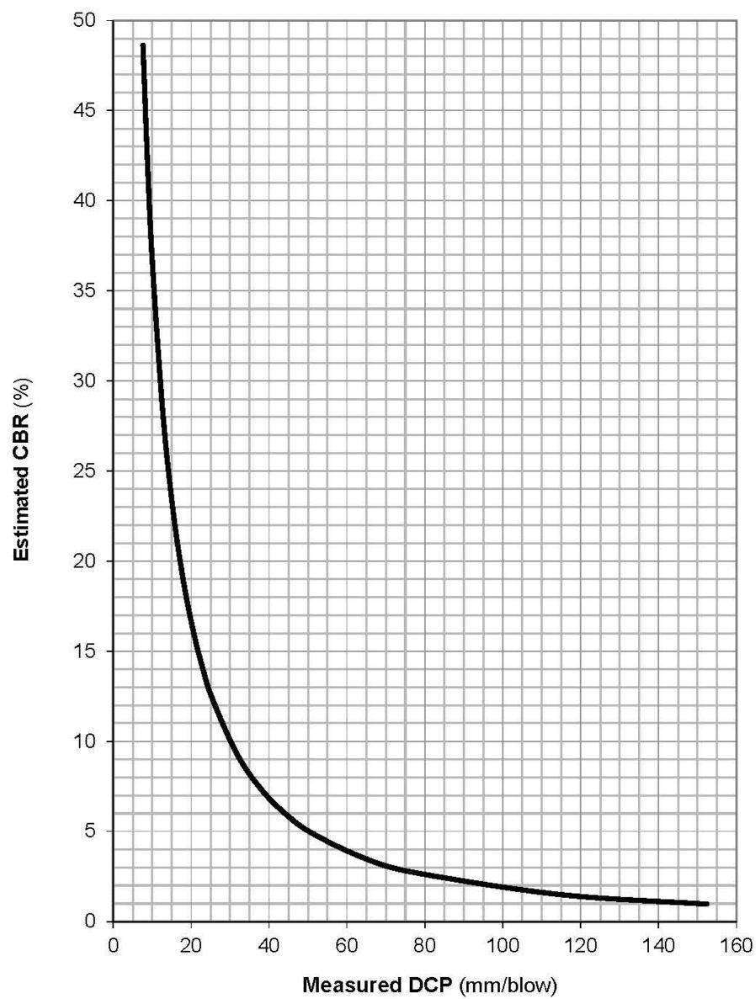

Full Depth Reclamation
Full Depth Reclamation (FDR) is a rehabilitation technique applied to severely distressed flexible pavements in which the entire asphalt layer and a portion of the underlying base are uniformly crushed and pulverized into a single reclaimed material[1]. The reclaimed aggregate is blended with stabilizing agents—such as calcium or magnesium chloride, cement, lime, fly ash, or emulsified asphalt—and compacted to form a new, well‑drained base that restores structural strength, flexibility, proper cross‑slopes and resistance to moisture‑related damage[1]. By converting the in‑situ pavement into a stabilized base, FDR eliminates existing distresses (rutting, cracking, raveling, potholes, drainage problems) and provides a foundation capable of supporting future traffic loads while reducing the need for material removal and disposal[1].
Purpose and treatment objectives
Full Depth Reclamation is applied to deteriorated flexible pavements that would otherwise need conventional reconstruction because the existing material must be removed and disposed of; by uniformly crushing and pulverizing the full pavement depth plus a portion of the underlying layer into a stabilized base, FDR resolves structural or base failures in existing flexible pavements while conserving the in‑situ material. It is also applied to pavements that have become severely distressed, where a deteriorated asphalt layer and weak underlying base can cause reflective cracking or other pavement failures; the process pulverizes the entire asphalt section through to the base, mixes it with stabilizing agents, and compacts it into a new base, thereby eliminating existing distresses and restoring strength, flexibility, drainage, and proper cross‑slopes. In addition, FDR is indicated when a pavement’s support layers need improvement, typically signaled by severe rutting, cracking, raveling, potholes, or drainage problems that reflect underlying structural deficiencies; the reclaimed material is mixed with a stabilizing agent and compacted to create a well‑drained base capable of supporting future traffic loads. The treatment also remediates pavements vulnerable to freeze‑thaw damage, water‑induced deterioration, and insufficient fatigue performance by stabilizing the reclaimed material so it better resists these distress mechanisms. [1]
[1] — Ch. 2 (pp. 54–57), Ch. 5 (pp. 124–128)
Full Depth Reclamation is employed primarily to rehabilitate severely distressed pavements by pulverizing the existing asphalt and underlying layers, mixing them with a stabilizer, and compacting the blend into a new base; this process restores the roadway’s functional performance and repairs the existing pavement damage by improving the support layers so that the rehabilitated road can again perform its intended function. In addition, the technique seeks to prevent the same distress mechanisms—such as rutting, cracking, potholes, raveling, and drainage problems—from causing future failure. [1]
[1] — Ch. 5 (pp. 124–126)
Distress characterization and causes
The distress that Full Depth Reclamation seeks to remediate is primarily driven by excess moisture entering the pavement system, which erodes material integrity and reduces structural capacity, especially when drainage problems allow water to accumulate in the subgrade; this manifests as rutting, cracking, raveling, potholes and other drainage‑related failures. Inadequate support layers also contribute to these symptoms, prompting the need for a reclaimed base that restores sufficient structural strength. Distress is often driven by water infiltration that causes water‑related damage, repeated traffic loads that produce fatigue cracking, and freeze‑thaw cycling that degrades the reclaimed material. Using chlorides lowers the freezing temperature of the reclaimed mix, thereby reducing deterioration from freeze‑thaw cycles, while emulsified asphalt adds resistance to water‑related damage and improves fatigue resistance under loading. [1]
[1] — Ch. 5 (pp. 124–128)
Applicability and treatment selection
Full Depth Reclamation is appropriate when the existing pavement shows support‑layer distress—such as rutting, cracking, raveling, potholes or drainage issues—that requires improvement of the base rather than only surface repair; the anticipated traffic loading falls within a range that can be accommodated by a design consistent with standard pavement design traffic analysis procedures; a recent pavement condition survey and in‑situ testing confirm the nature of the distress and provide adequate subgrade strength, while sufficient existing pavement thickness and suitable subgrade material are available to be incorporated into the reclaimed layer; and any site drainage deficiencies have been identified and corrected so that the reclaimed layer will rest on a well‑drained foundation. [1]
[1] — Ch. 5 (pp. 124–126)
Full Depth Reclamation should not be used when the distress is mainly confined to the surface rather than deficiencies in the support layers, because other rehabilitation methods will generally perform better for those distresses. It also should be avoided if a reliable traffic forecast, a recent condition survey, adequate in‑situ subgrade testing and proper sampling cannot be obtained, or if existing drainage problems cannot be corrected before construction; under such circumstances an alternative maintenance, preservation, rehabilitation, or repair approach is required. In addition, the process must not be placed when ambient conditions fall outside specified limits, specifically when air temperature falls or is expected to fall below 40 °F during the seven‑day cure period. Placement also must be avoided if rain is occurring or is anticipated within two hours of completing the work. Cement slurry containing accelerating admixtures may not be placed when the temperature is expected to drop below 35 °F in the first 24 hours after placement. Dry additives must not be applied when wind conditions would cause blowing additives that are objectionable to traffic or adjacent property owners. Finally, the reclamation cannot proceed without the required rotary reclaimer, water‑proportioning system, and other approved equipment; lack of such equipment necessitates selection of an alternative method. [1][2]
[1] — Ch. 5 (pp. 124–126); [2] — SECTION 300 BASE COURSES (pp. 226–227)
Condition assessment and timing
To decide if Full Depth Reclamation is appropriate and where it should be applied, an initial evaluation must gather traffic level estimates, a recent pavement condition survey documenting distress such as rutting, cracking, raveling, potholes and drainage problems, and in‑situ strength measurements using tests like the Falling Weight Deflectometer, dynamic cone penetrometer or light weight deflectometer. The distress survey also helps identify the mechanisms causing damage so they can be avoided in the reclaimed layer. In addition, a systematic sampling program that follows the prescribed number of locations, sample size, depth and handling procedures is required to characterize the existing pavement and subgrade materials before design. These inspections, measurements and tests together provide the information needed to assess layer thicknesses, drainage conditions and overall suitability of FDR. [1]
The figure below illustrates the correlation between Dynamic Cone Penetrometer results and California Bearing Ratio values used in this evaluation process.

A line graph plots Estimated CBR (%) on the vertical axis against Measured DCP (mm/blow) on the horizontal axis. The vertical axis ranges from 0 to 50, and the horizontal axis ranges from 0 to 160.
The curve demonstrates an inverse relationship: as measured DCP penetration increases, estimated CBR decreases. The value drops sharply to about 25% at 20 mm/blow and continues to decline gradually towards zero as DCP approaches 160 mm/blow.
Text description of this figure
A line graph plots Estimated CBR (%) on the vertical axis against Measured DCP (mm/blow) on the horizontal axis. The vertical axis ranges from 0 to 50, and the horizontal axis ranges from 0 to 160.
The curve demonstrates an inverse relationship: as measured DCP penetration increases, estimated CBR decreases. The value drops sharply to about 25% at 20 mm/blow and continues to decline gradually towards zero as DCP approaches 160 mm/blow.
The figure displays a non-linear curve plotting the relationship between the measured DCP in mm/blow on the horizontal axis and the estimated CBR percentage on the vertical axis.
[1] — Ch. 5 (pp. 124–126)
Full Depth Reclamation is applied to pavements that are already distressed, and it is especially recommended when the distress reaches a severe level; under those conditions the existing asphalt and underlying layers are pulverized, stabilized, and compacted to form a renewed base capable of supporting further traffic. The treatment should be considered whenever the support layers—base or subgrade—require improvement rather than when surface‑related problems dominate, as indicated in Table 5.8, which identifies FDR as appropriate for situations where underlying deficiencies are present while other rehabilitation strategies are generally more effective for surface issues such as rutting, cracking, raveling, potholes, or drainage problems. [1]
[1] — Ch. 5 (pp. 124–126)
Materials and repair details
Full Depth Reclamation (FDR) requires that the entire flexible pavement section together with a predetermined portion of the underlying material be uniformly crushed, pulverized or blended to create a stabilized base course [1]. The in‑place material is then mixed with stabilizing additives and, when required, imported aggregate or reclaimed asphalt pavement (RAP) so that the resulting mix attains the depths and gradations specified in the approved design [2]. Stabilizing agents may be chemical, asphalt‑based, or other materials such as calcium chloride, magnesium chloride, Portland cement, lime, fly ash, lime kiln dust, or emulsified asphalt, and the selection of type and rate is performed during the FDR mix‑design process [1][2]. Calcium or magnesium chloride are generally applied as a minimum 35 % solution at a rate of 0.1–0.15 gallons per square yard for each inch of reclaimed depth [1]. Mechanical stabilization may involve adding aggregate or RAP during pulverization to improve gradation, while chemical stabilization incorporates wet or dry additives such as Portland cement, lime, or fly ash; pulverization stabilization relies only on the in‑place materials plus moisture [1]. A self‑propelled traveling rotary reclaimer is used to cut through the existing pavement, subbase and subgrade to depths of up to 16 inches, pulverizing the material to a maximum particle size of 2 inches across an operating width of at least 8 feet while automatically metering water, dry or liquid additives, and emulsion [2]. Motor graders shape the reclaimed mix to the required roadway grade before compaction [1]. For mixes based on emulsion or foamed asphalt that are less than 8 inches deep, breakdown and intermediate rolling shall be performed with a pneumatic‑tire roller of 25 tons or greater; if the reclaimed layer equals or exceeds 8 inches, initial breakdown is achieved with a 25‑ton vibratory padfoot roller [2]. Finish rolling shall be completed using either a single or tandem steel‑drum static roller weighing between 12 and 14 tons [2]. Placement of the reclaimed layer shall not be undertaken when ambient air temperature falls below 40 °F during the required seven‑day cure period, nor when cement slurry containing accelerating admixtures is placed and temperatures are expected to drop below 35 °F within the first 24 hours [2]. The appropriate reclaimed layer thickness must be selected based on the composition of the existing pavement and subgrade as well as the structural demands of anticipated traffic and environmental conditions, and any existing drainage problems must be identified and corrected before constructing the reclaimed layer [1].
The table below specifies the mix design procedures for primary stabilizing additive types used in Full Depth Reclamation.
| Primary Stabilizing Additive | Mix Design Procedure |
|---|---|
| Asphalt | Pub. 27 (Bulletin 27) |
| Chemical (Portland Cement, Hydrated Lime,Supplementary Cementitious Material**& PortlandCement Slurry) | Pub. 242 Appendix J.3 |
| Calcium Chloride | PTM No. 106 *, Pub. 242 Appendix J.3 |
| Whe used as the primary stabilizing materal, calcimchloride should be applie as a miimum 35% soluat a rate between 0.10 to 0.15 gallons per square yard for each inch of depth reclaimed.**Calcium oxide is used to activate the cementitious performance of Supplementary Cementitious Material. | |
Source: Commonwealth of Pennsylvania DEPARTMENT OF TRANSPORTATION Publication 408/2026 SPECIFICATIONS, untitled table, p. 226. [2]
[1] — Ch. 2 (pp. 54–57), Ch. 5 (pp. 124–128); [2] — SECTION 300 BASE COURSES (pp. 225–227)
Full Depth Reclamation operates by uniformly crushing the entire flexible pavement section together with a predetermined portion of the underlying material and blending the resulting reclaimed aggregate with a stabilizing agent; the type of stabilization—mechanical, chemical, asphalt or other processes—may affect the resulting structural capacity and structure‑layer coefficient, with basic pulverization producing a product comparable to a standard 2A subbase, calcium‑chloride or similar additives providing slight improvement, asphalt‑stabilized layers generally matching existing layer coefficients for cold recycling, and chemical stabilization using cement, lime or similar additives delivering support stiffness equivalent to or slightly better than that achieved from asphalt material stabilization [1]. Calcium chloride or magnesium chloride provide particle‑cementing that can increase strength and lower the freezing temperature, thereby improving freeze‑thaw resistance; they are generally applied as a minimum 35 % solution at a rate of 0.1 to 0.15 gal per square yard for each 1 inch of depth reclaimed [1]. When emulsified asphalt is used as the stabilizer it improves resistance to water‑related damage and fatigue and can be combined with other additives such as granular materials, cement and lime, but the appropriate amount and type must be selected through the mix‑design process [1]. The reclaimed layer’s material properties—including inherent strength potential, moisture content for compaction, and gradation when additional aggregate or RAP is introduced—must be compatible with the existing base and subgrade, and increasing the amount of chemical stabilizer can generally increase strength but excessive amounts may result in brittleness [1]. During construction the water‑to‑material ratio must be controlled by equipment that meters liquids relative to cut depth, width and speed, and the mixture must be thoroughly blended [2]. Performance also depends on achieving a maximum reclaimed particle size of 2 inches in the greatest dimension and cutting to the design depth, which may be up to 16 inches, as required by the approved mix design [2]. The existing pavement condition is critical because the pulverizing machine always penetrates completely through the asphalt layers into the underlying base layers, eliminating the potential for reflective cracking that would occur if a weak base remained; consequently the technique is suitable for severely distressed pavements and for upgrading existing bases [1]. A thorough assessment of the existing pavement should consider traffic level, the severity of distresses such as rutting, cracking, raveling, potholes and drainage problems, and in‑situ strength measurements from Falling Weight Deflectometer, Dynamic Cone Penetrometer or Light‑Weight Deflectometer testing that define subgrade stiffness [1]. Any excess moisture or poor drainage in the subgrade must be corrected before reclamation because water can degrade material integrity and structural capacity [1]. Placement cannot occur when air temperature is expected to fall below 40 °F during the required seven‑day cure period, nor can cement slurry with accelerating admixtures be placed if temperature may drop below 35 °F within the first 24 hours, and work must be avoided in rain or when rain is anticipated within two hours of completion [2].
The table below presents a selection matrix for Full Depth Reclamation based on specific pavement distress types.
| PAVEMENT DISTRESS | FDR |
|---|---|
| Surface DefectsRavelingFlushingLow skid resistance | |
| DeformationCorrugationsLow RuttingModerate/High Rutting1 | X 2,3 |
| Cracking (Load Associated)AlligatorLongitudinalWheel PathPavement EdgeSlippage | XXX |
| Cracking (Non-Load Associated)Block (Shrinkage)Longitudinal (Joint)Transverse (Thermal)Reflection | XXX |
| Maintenance PatchingSpraySkinPotholeFull Depth Replacement | X4X4X |
| Weak Base or Subgrade | X |
| Ride Quality/RoughnessGeneral UnevennessDepressions (Settlement)High Spots (Heaving) | X 5X6 |
Notes: 1 Rutting originating from the lower portion of the pavement (below surface course and including base and subgrade). 2 The addition of new aggregate may be required for unstable mixes. 3 The chemical stabilization of the subgrade may be required if the soil is soft, or wet. 4 In some instances, spray and skin patches may be removed by cold planing prior to these treatments (considered if very asphalt rich, bleeding). 5 Used if depressions are due to a poor subgrade condition. 6 Used if high spots caused by frost heave or swelling of an expansive subgrade soil exist.
Source: Pavement Policy Manual (Publication 242, May 2015 Edition, Change No. 10), untitled table, p. 127. [1]
[1] — Ch. 2 (pp. 54–57), Ch. 5 (pp. 124–128); [2] — SECTION 300 BASE COURSES (pp. 226–227)
Treatment procedures
Prior to initiating Full Depth Reclamation the roadway must be evaluated and assessed; this evaluation includes gathering traffic forecasts, conducting a pavement condition survey, performing in‑situ subgrade testing, and obtaining representative samples so that layer thicknesses can be defined and any existing drainage problems should be identified and corrected before constructing the reclaimed pavement layer. Preparation also requires ensuring all equipment meets environmental standards and is calibrated before use. A self‑propelled traveling rotary reclaimer or equivalent machine capable of cutting through the existing roadway to depths of up to 16 inches, or as required by the design, is provided for the pulverizing operation. The road reclaimer pulverizes the existing asphalt layer and penetrates completely through it into the underlying aggregate base or subgrade, thereby removing the distressed material; this pulverization also serves as the foundational step for all stabilization options. In‑place pulverizing and mixing a combination of existing roadway material layers, stabilizing additives, and imported aggregate or RAP material is performed in one pass, reducing particle size to a maximum of 2 inches. Stabilization of the reclaimed mixture may be achieved mechanically by introducing additional aggregate while the reclaimed mix is reshaped and re‑compacted, or chemically by applying dry or slurry additives either ahead of the reclaimer or through a spray bar in the mixing chamber; one or more agents such as cement, fly ash, lime kiln dust, asphalt, or other chemicals can be used. The mixed materials are often incorporated with additional materials based on an approved FDR mix design. After stabilization the mixture is placed back at roadway grade, where a motor grader shapes it to the required cross‑slope and elevation; spreading and shaping may also be performed by another method approved by the Representative. The shaped material is then compacted to create a new base layer; when the FDR layer is less than 8 inches deep, breakdown and intermediate rolling are carried out with a 25‑ton pneumatic tire roller, whereas if the layer is 8 inches or deeper an initial breakdown is performed with a 25‑ton vibratory padfoot roller, followed by finish rolling using a 12‑ to 14‑ton steel‑drum static roller. Placement may not occur if air temperature falls below 40°F during the required seven‑day cure period, and work must be completed at least two hours before any anticipated rain. After compaction the new base layer can be opened to traffic. [1][2]
[1] — Ch. 5 (pp. 124–126); [2] — SECTION 300 BASE COURSES (pp. 225–227)
The Full Depth Reclamation process starts with a pavement pulverizer or road reclaimer that breaks down the existing asphalt surface and underlying base, which the specifications define as a self‑propelled traveling rotary reclaimer capable of cutting up to 16 inches deep and pulverizing in place to a maximum particle size of 2 inches [1][2]. Stabilizing agents may be introduced either dry or as a slurry ahead of the reclaimer, or they can be sprayed into the mixing chamber of the reclaimer through a spray bar, after which the material is mixed with water and additives by an integral liquid proportioning system built into the equipment [1][2]. Once the stabilized mix has been produced, it is placed back to grade, shaped using motor graders, and then compacted into the new base layer; compaction is performed with a 25‑ton pneumatic tire or vibratory padfoot roller for intermediate rolling when the depth is less than eight inches, followed by a 12‑to‑14‑ton steel drum roller for finish [1][2]. Prior to full production, a quality‑control plan must be submitted at least two weeks in advance, the equipment calibrated and recorded, and a 300‑ft test strip constructed to verify mix rates and density [2]. Wet subgrade locations should be identified and effective drainage installed before reclamation to ensure a well‑drained pavement system [1]. Placement of the reclaimed material may not occur when the air temperature is expected to fall below 40 °F during the required seven‑day cure period, nor when rain is forecast within two hours of completion, and dry additives must be withheld if wind conditions would cause them to become objectionable to traffic or adjacent property owners [2]. In addition, cement slurry with accelerating admixtures requires written approval and cannot be placed if temperature is anticipated to drop below 35 °F in the first 24 hours after placement [2]. Traffic may be permitted to resume only after the compacted base has been achieved, as indicated by the allowance for vehicles to drive on the newly reclaimed pavement base layer once compaction is complete [1].
[1] — Ch. 5 (pp. 124–126); [2] — SECTION 300 BASE COURSES (pp. 226–227)
Quality and workmanship
According to the Pavement Policy Manual (Publication 242, May 2015 Edition, Change No. 10), before any Full Depth Reclamation is undertaken the existing pavement must be evaluated through a traffic level estimate, a recent distress survey that documents rutting, cracking, raveling, potholes and drainage issues, and in‑situ testing such as Falling Weight Deflectometer, dynamic cone penetrometer or lightweight deflectometer to establish subgrade stiffness; representative material samples are also collected according to the sampling criteria. The same manual states that during design the required layer thickness is identified and any existing drainage problems are corrected before reclamation. It further requires that the chosen stabilization method—whether pulverization only, mechanical addition of aggregate, or chemical additives—be determined in the laboratory with specification of stabilizer type and content, and that excessive amounts be avoided because they may cause brittleness. After construction the manual calls for a post‑placement in‑situ test such as a Falling Weight Deflectometer to verify the stiffness of the newly reclaimed base. The Commonwealth of Pennsylvania Department of Transportation Publication 408/2026 Specifications requires that a quality‑control plan be submitted at least two weeks before work begins, identifying calibrated equipment, personnel and procedures; all mixing and spreading equipment must be operational, calibrated and its water and additive metering recorded. Prior to full production the specifications mandate construction of a 300‑foot test strip to demonstrate proper blending, placement and final compaction, and the strip must show that the minimum density can be achieved before proceeding; thereafter the n = 1 density is determined for each 3,000 square‑yard lot in accordance with PTM No. 402. The specifications also prohibit placing Full Depth Reclamation materials when air temperature falls, or is anticipated to fall, below 40 °F within the subsequent required seven‑day cure period. Likewise, reclamation shall not be performed in rain, nor if rain is anticipated within two hours of completion of the work. [1][2]
[1] — Ch. 5 (pp. 124–126); [2] — SECTION 300 BASE COURSES (pp. 226–227)
A satisfactory Full Depth Reclamation must first pass a 300‑foot test strip that proves the process can achieve the minimum density required in section 344.3(e)3.a and confirms correct water and additive application rates before full production proceeds; the test strip also serves to identify and correct any non‑conforming aspects. Placement may only occur when ambient temperature does not fall below 40°F during the subsequent required 7‑day cure period, rain is not expected within 2 hours of completion, and cement slurry with accelerating admixtures is prohibited if temperature is anticipated to drop below 35°F in the first 24 hours after placement. All equipment must be calibrated and operational, and compaction must follow the specified roller types and weights. [2]
[2] — SECTION 300 BASE COURSES (pp. 226–227)
Performance and service life
Full Depth Reclamation improves overall pavement condition by pulverizing the existing asphalt and underlying base, which eliminates existing distresses and creates a renewed base layer. The pulverizing machine always penetrates completely through the asphalt layers into the underlying base layers, thereby eliminating the potential for reflective cracking or pavement failure resulting from a weak base layer. By re‑establishing drainage and cross‑slopes, the treatment restores functionality that supports proper water runoff. The process adds strength and flexibility to the existing pavement materials, providing structural reinforcement while reducing the risk of reflective cracking. Because the reclaimed material can be further stabilized with chemicals such as calcium chloride or magnesium chloride, cement, fly ash, or emulsified asphalt, durability is enhanced; the chloride additives provide a gain in strength due to particle cementing and lower the freezing temperature of the reclaimed material, improving resistance to freeze‑thaw cycles when applied as at least a 35 % solution at a rate of 0.1 to 0.15 gallons per square yard for each inch of depth reclaimed, while emulsified asphalt stabilization improves resistance to water‑related damage and fatigue performance under loading. Collectively supporting improved functionality and potentially extending the pavement’s service life, reclamation can be used as a first step in stage construction, adding more structure as needed to meet increasing traffic demands over time. [1]
[1] — Ch. 5 (pp. 124–128)
Recurring distresses after Full Depth Reclamation often reflect the pre‑rehabilitation condition—rutting, cracking, raveling, potholes and drainage problems—because the same damage mechanisms can reappear if they are not addressed during design. Their development is influenced by several factors identified in the selection process: a reliable estimate of future traffic loading, the existing pavement condition revealed by a distress survey, the in‑situ strength of the subgrade measured with FWD or other tests, and especially excess moisture which can degrade material integrity; additionally, improper layer thickness or over‑application of chemical stabilizer may result in brittleness. Proper evaluation of these factors before construction helps prevent failure of the reclaimed pavement. [1]
[1] — Ch. 5 (pp. 124–126)
Monitoring and follow-up
After the full‑depth reclamation is placed, a 300‑foot test strip must be constructed and demonstrated proper mixing, compaction, and shaping before full production may proceed. [2] Upon completion of the full‑depth reclamation work, the reclaimed section should be evaluated with in‑situ testing to verify that the new base meets design requirements. [1] A Falling Weight Deflectometer test is performed to determine the stiffness of the newly compacted pavement. [1] Dynamic cone penetrometer or lightweight deflectometer measurements may also be taken to confirm subgrade strength. [1] Post‑construction verification must include testing the reclaimed area for density, and the minimum density required in 344.3(e)3.a must be confirmed. [2] An n=1 density shall be determined according to PTM No. 402 for each 3,000 square‑yard lot. [2]
[1] — Ch. 5 (pp. 124–126); [2] — SECTION 300 BASE COURSES (pp. 226–227)
Reference tables
The table below specifies climatic limitations for construction based on the type of stabilizer used. It relates to the section Materials and repair details.
| TYPE OF STABILIZER | CLIMATIC LIMITATION FORCONSTRUCTION |
|---|---|
| Lime, Fly Ash or Lime-Fly Ash | Do not perform work when reclaimed material couldbe frozen. Air temperature in the shade should be noless than 40°F and rising. Complete stabilization atleast one month before the first forecast temperaturedrop below freezing. Two weeks minimum of warm tohot weather is desirable after completing thestabilization work. |
| Portland Cement, Portland Cement Slurry, orPortland Cement with Fly Ash | Do not perform work when reclaimed material couldbe frozen. Air temperature in shade should be no lessthan 40°F and rising. Complete stabilization should beat least one month before the first forecast temperaturedrop below freezing. Cement Slurry with acceleratingadmixtures can be used in periods of coolertemperatures with the written approval of theDME/DMM. Do not place cement slurry mixtures withaccelerating admixtures when the air temperature isanticipated to fall below 35° F within the first 24 hoursfollowing placement. |
| Calcium Chloride | Do not perform work when reclaimed material couldbe frozen. Air temperature in shade should be no lessthan 40°F and rising. Complete stabilization should beat least one month before the first forecast temperaturedrop below freezing. |
| Emulsified Asphalt | Do not perform work when reclaimed material could be frozen. Air temperature in the shade should be no less than 59°F and rising. The curing process for emulsified asphalt stabilization can be affected by very high humidity. Defer work when rain is imminent or when humidity is greater than 80%. Warm to hot, dry weather is preferred for all types of asphalt stabilization involving cold mixtures because of improved binder dispersion and curing. |
Rows list types of stabilizers and columns provide climatic limitations for their construction.
Source: Pavement Policy Manual (Publication 242, May 2015 Edition, Change No. 10), untitled table, p. 281. [1]
References
- Pennsylvania Department of Transportation, "Pavement Policy Manual," Publication 242, May 2015 Edition, Change No. 10, 2025. [Online]. Available: https://www.pa.gov/content/dam/copapwp-pagov/en/penndot/documents/public/pubsforms/publications/pub-242/pub%20242%20change%2010.pdf
- Pennsylvania Department of Transportation, "Publication 408/2026 Specifications," Change No. 1, 2026. [Online]. Available: https://www.pa.gov/content/dam/copapwp-pagov/en/penndot/documents/public/pubsforms/publications/pub_408/408_2026/408_2026_1/408_2026_1.pdf